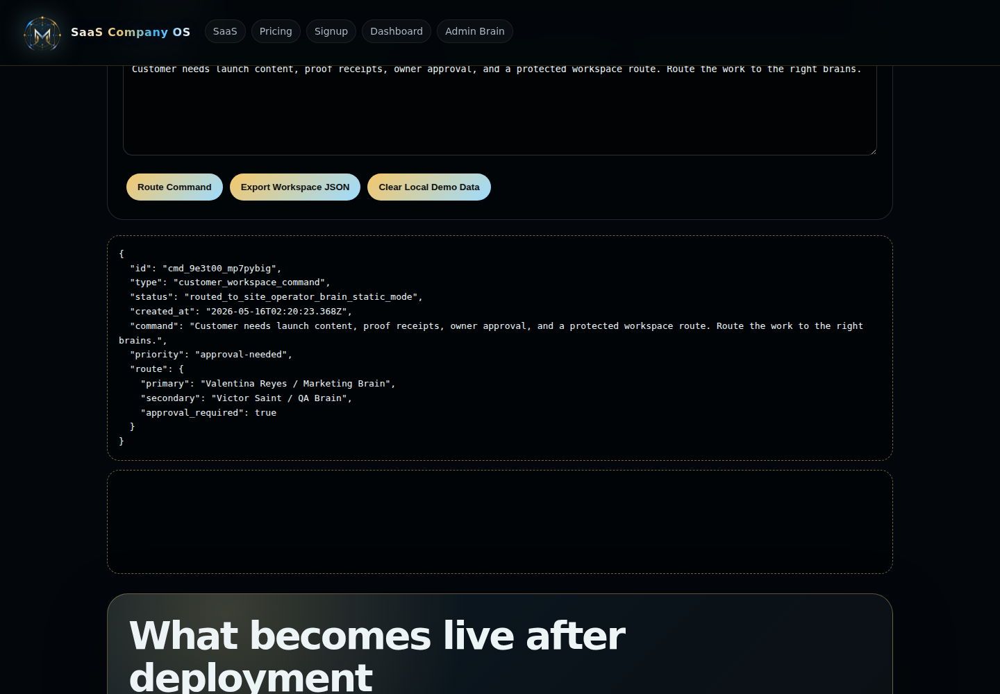
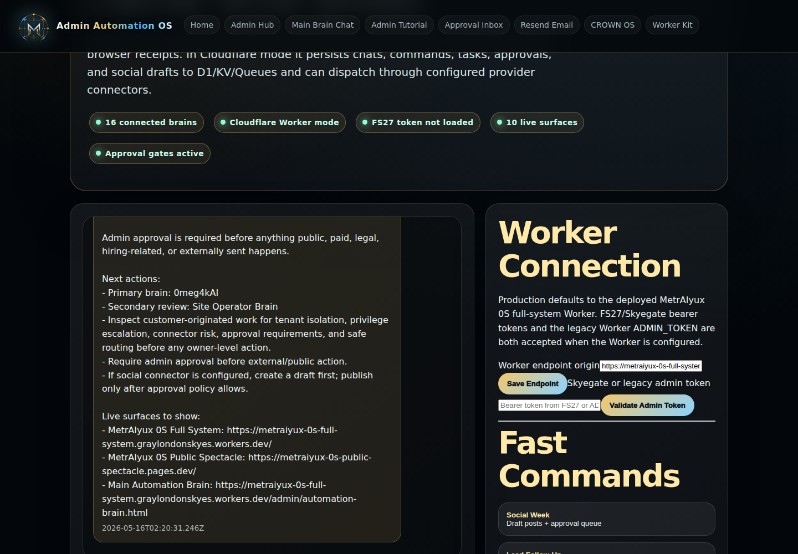
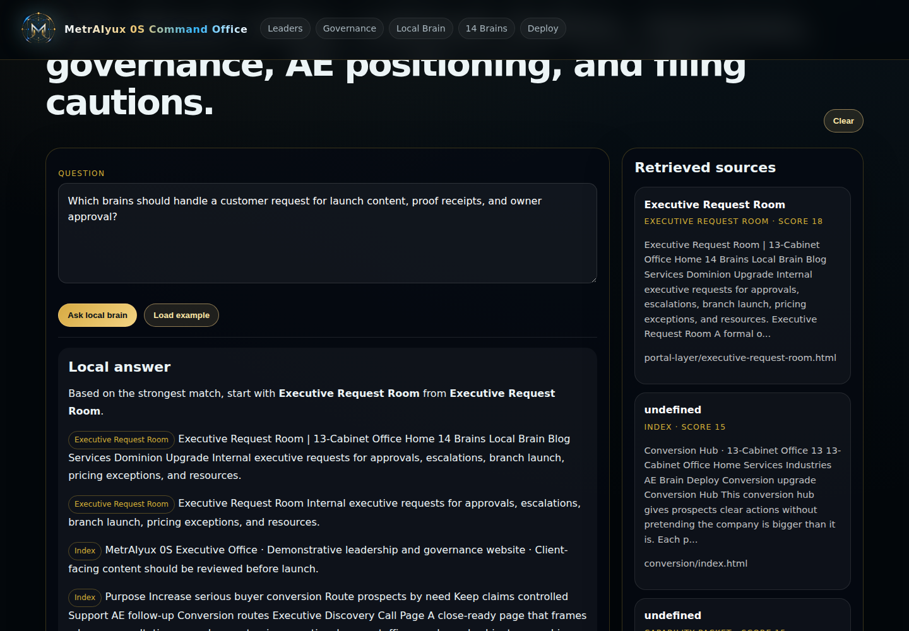
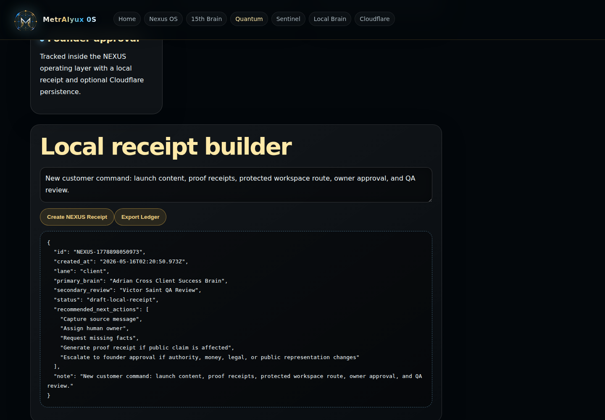

I open with the control room.
I put routing, gates, proof, and live surfaces in the first experience so the offer feels real before a call ever happens.
👋 Built by Gray London Skyes
I built MetrAIyux 0S to give an operation a public front door, client workspace, founder command deck, SkyeGateFS27 access, proof receipts, and sixteen operating brains that can route the work after someone says yes. Our agents, gates, and networks keep moving after the first yes. ⚡
Inbound signal
Access and event gate
Operating model
Verification layer
👀 What I put in front of buyers
I start you inside the command surface, then I move you into the receipts: the router, the client lane, the FS27 gate, the pricing surface, and the full command deck. If you need to understand what I built, I want you looking at the machine, not reading empty claims.
I put routing, gates, proof, and live surfaces in the first experience so the offer feels real before a call ever happens.
I show how scattered requests become client workspace activity, founder command, review gates, and proof receipts.
I ask whether the operation needs client separation, approvals, proof, and multi-function routing before I send someone deeper.
I show FS27 and MetrAIyux running, while the private implementation lane and owner-only controls stay protected.
📸 Proof from inside the live system
I captured the customer command room routing a request, the admin brain answering, the local brain retrieving sources, and NEXUS creating a receipt. These are not mockups; this is the actual 0S workflow I open when someone asks what MetrAIyux 0S actually does. 🔥

Customer Portal
Admin Brain
Local Brain
NEXUS Receipt🧠 Founder-built infrastructure
I build sovereign web infrastructure through Skyes Over London: public sites that can sell, private command layers that can run the work, and proof surfaces that make the system easier to trust. MetrAIyux 0S is that idea pushed into a full operating deck: client workspaces, founder command, gated actions, live proof, and sixteen brains that route real business pressure into lanes.
System architecture
I split the product into layers so a buyer can see what matters without getting the private playbook: what they can inspect, where client work lives, how founder command stays separate, how access is checked, and where proof gets produced.
I use the overview, route, value map, and fit check to make the system understandable before a call.
Client intake, status, documents, service mapping, and requests stay away from founder command.
Sales, operations, finance, legal, HR, tech, proof, and expansion get named ownership instead of floating around.
Bearer introspection and mirrored platform events connect the public proof story to protected operations.
Screenshots, live pages, status APIs, browser tests, and ledgers back up the story.
Live proof surfaces
I do not send every buyer to the same place. An owner may need the overview. A technical evaluator may need FS27. A closer may need pricing. A client operator may need the Client OS. I route the conversation instead of dumping everyone at the same door.
I use this when someone needs to feel the move from pressure to proof.
Proof routerI use this when a qualified prospect needs the right live link fast.
FS27 gateI use this when trust, auth, and event proof are the conversation.
Commercial laneI use this when the buyer is ready to compare deployment options.
✅ Fit route
I built this for operators with scattered work, approval risk, client separation needs, and buyers who expect proof. If the fit is weak, I would rather say that clearly than force the wrong sale.